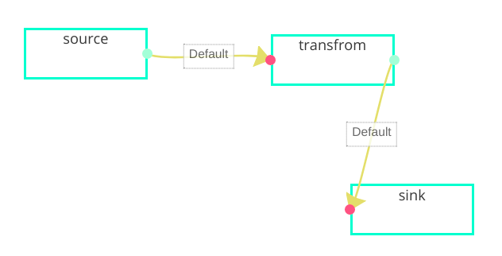

ETL Task introduction
streamSql describes that stream computing is very simple and fast, but sometimes some business logic is not convenient for SQLization, and it does not require complex mechanisms such as window. Although more complex data data processing needs to be implemented through code, I hope that the entire data stream processing becomes Simple, then using streaming ETL is a very pleasant coding method
# node
DFX abstracts the ETL process as the following three links (nodes), expresses all data flow activities as
the following three links, and indicates the data flow direction by arrow, and describes
the entire flow calculation process through a flow
- source (The operator realizes how to connect the data stream to the system)
- transform (This operator implements how to convert the data stream)
- sink (This operator implements how to stream data to external systems)
# flow

As shown in the figure above, the real-time ETL process is described by flow, examples are: Kafka -> business processing -> HDFS